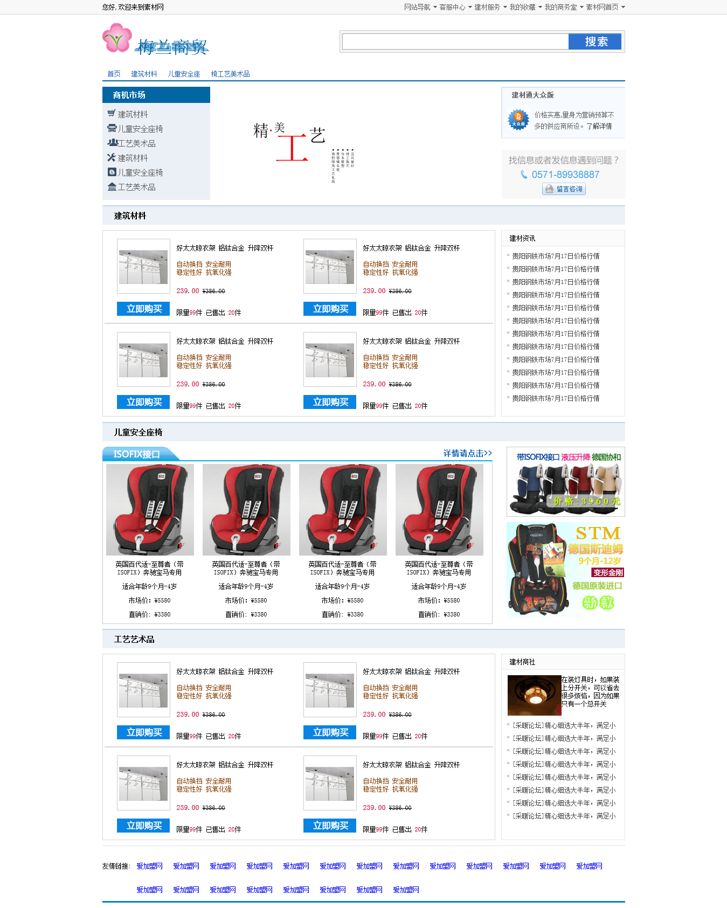
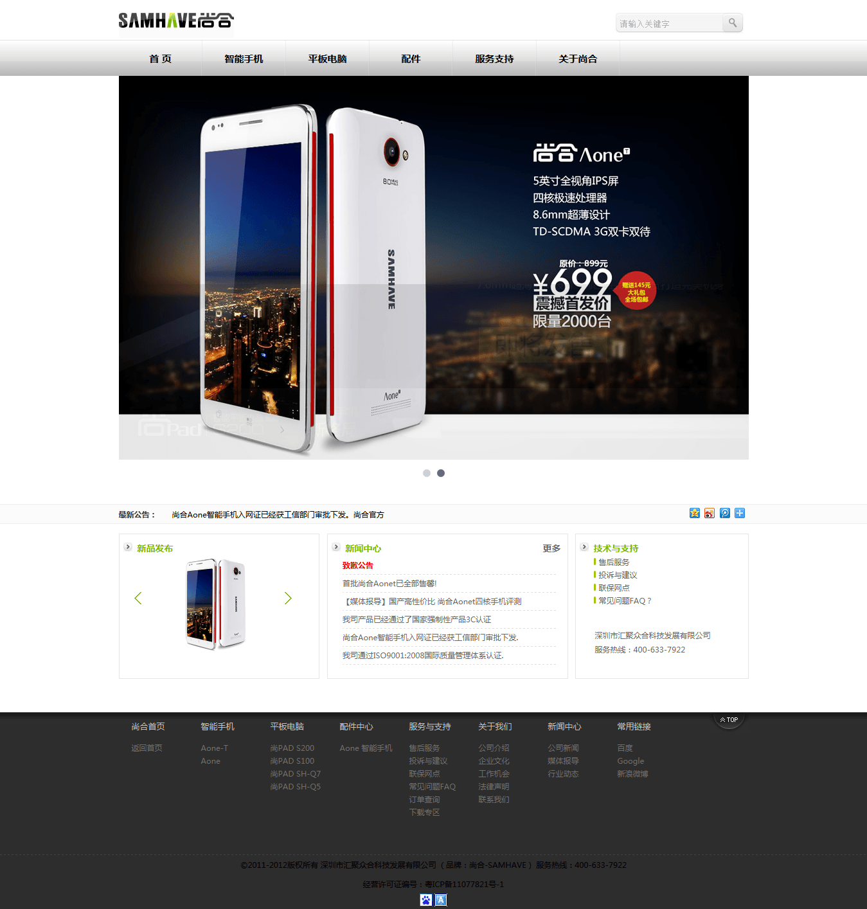
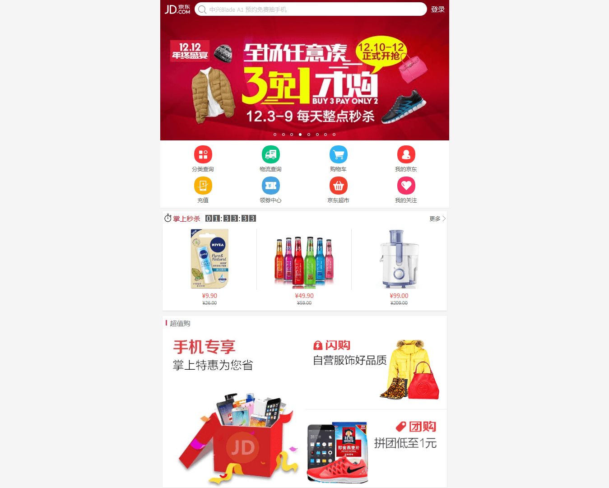
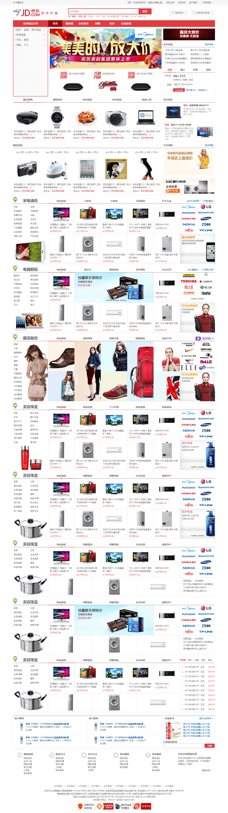
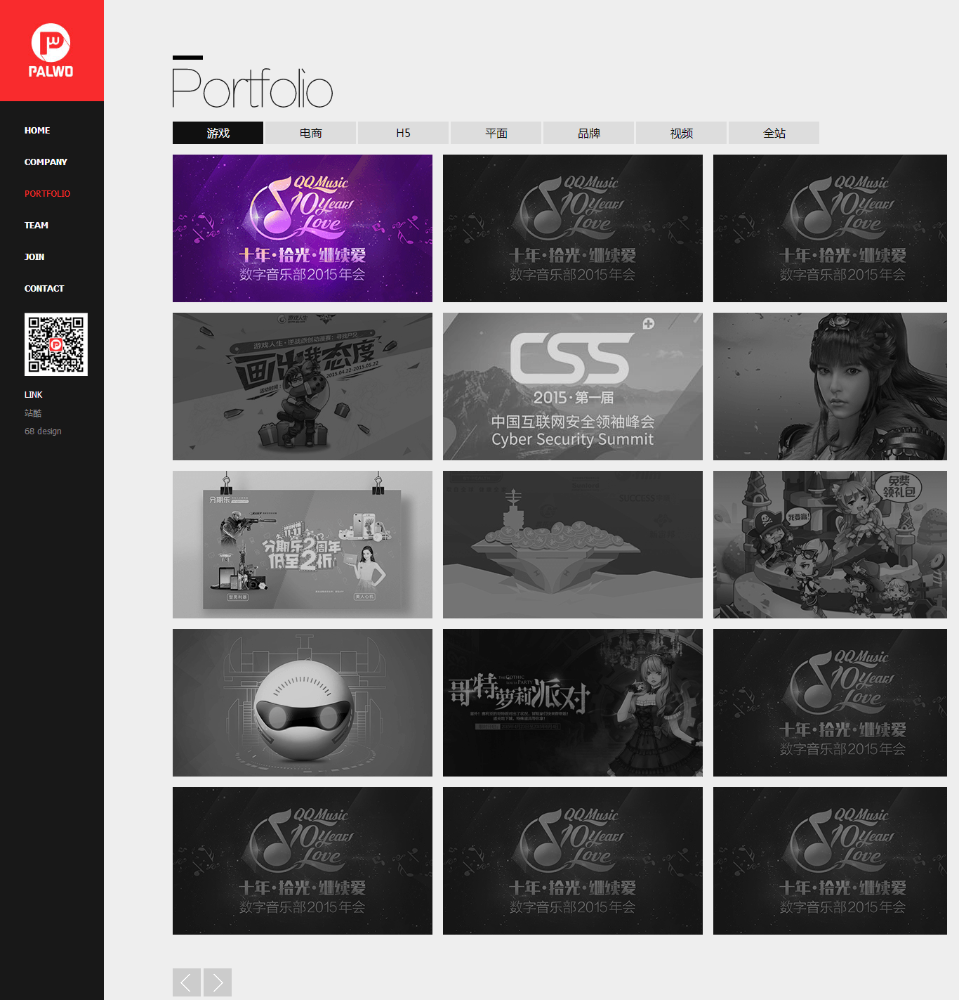

项目介绍
主要经历-模仿的项目有:
1.梅兰商贸商城、

2.尚合商城、

3.微金所、

4.京东商城（仿）、

5.京东商城（手机-仿）、

6.朋沃（整站-团队项目）

专业技能
准备写一个css3的动画特效来展现技能
1.熟练使用HTML、CSS,
熟悉标签的语义化布局，了解h5、css3一些新的属性；
2.熟练使用JavaScript，熟练编写原生js，熟悉jQuery；
3.熟练使用Git来创建仓库、切换创建分支、还原、上传版本；
部分项目介绍
4.京东商城之-手机版
5. 朋沃（整站-团队项目）
自我评价
1. 具有较强的适应能力，能够很快融入新的团队；
2. 有良好的沟通能力， 可以和周围的人很快沟通并解决问题；
3. 喜欢学习新的技术并且用于实践,喜欢研究一些开源代码，看看一些前端方向的大牛的一些技术博客，喜欢逛npmjs.com ,github.com,csdn等开源站点,自己在github.com上发布过开源代码；
4. 对于一些比较复杂的技术问题，自己有一定的独立解决问题的能力；
5. 个人性格较为内向，但是后面发现这个不适应于快速解决自己遇到的技术问题，就在于朋友交流沟通的过程中完善了很多，现在已经基本可以很好地取得有效的沟通了，且解决问题的效率也有很大的提升。